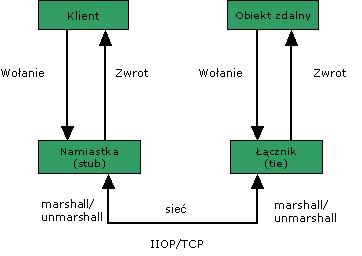

Identyfikacja zasobÛw (JNDI) i protokÛ≥ RMI-IIOP
W tym punkcie poruszymy waøny temat lokalizacji zasobÛw
w
úrodowiskach rozproszonych. Bardzo dobrze bÍdzie widoczne jego
znaczenie przy omawianiu protoko≥u RMI-IIOP. Ten zaú jest podstawπ
interakcji w serwerach JEE.
1. Serwisy
nazw i katalogÛw
Koncepcja serwisÛw nazw i katalogÛw
(naming and
directory services) polega ogÛlnie na tym, aby w sposÛb
zunifikowany, niezaleøny od fizycznych w≥aúciwoúci danego zasobu i bez
koniecznoúci znajomoúci jego fizycznej lokalizacji mÛc uzyskaÊ
do niego dostÍp. Zasoby mogπ mieÊ dowolnπ naturÍ - np. mogπ to
byÊ
obiekty, drukarki, komputery itp.
Serwisy nazw wiπøπ zasoby z
identyfikatorami (nazwami).
Np. system plikowy jest swoistym serwisem nazw, ktÛry pozwala nam po
nazwach odwo≥ywaÊ siÍ do plikÛw.
Przyk≥adem innego serwisu nazw jest DNS.
ZbiÛr par powiπzaÒ
pomiÍdzy nazwami a zasobami oznaczanym przez te nazwy nazywa siÍ
kontekstem
Konteksty sπ zazwyczaj zorganizowane w hierarchiczne struktury,
zaczynajπce sie od tzw. inicjalnego kontekstu (initial context).
Ten kontekst - w≥aúciwy dla danego serwisu - okreúla konwencje
nazewnicze i zawiera okreúlone podkonteksty.
W kaødym kontekúcie mogπ byÊ zawarte podkonteksty.
Przyk≥ad: system plikowy. Inicjalny kontekst /, podkontekst /usr
itd.
W ramach kontekstu moøliwe sπ okreúlone operacje, np. zwiπzania
nazwy z zasobem, uzyskanie dostÍpu do zasobu po jego nazwie.
Serwisy s≥ownikowe poszerzajπ te koncepcje o moøliwoúci nadawania
zasobom nie tylko nazw, ale i atrybutÛw i odpowiednie operacje
(m.in. wyszukiwania).
2. JNDI -
koncepcja i architektura
W Javie dostÍpny jest Java Naming and
Directory Interface (JNDI) -
specjalne API pozwalajπce uzyskiwaÊ dostÍp do serwisÛw nazw i
katalogÛw.
Operowanie na zasobach za pomocπ serwisÛw nazw i katalogÛw wymaga
okreúlonych krokÛw:
- Uruchomienie odpowiedniego serwera nazw, dostarczajπcego
wymaganego serwisu (zazwyczaj)
- Uzyskanie inicjalnego
kontekstu dla tego serwisu (Context ctx =
new InitialContext(...))
- Ew. dodawanie lub
wyszukiwanie podkontekstÛw (przechodzenie do podkontekstÛw - ctx.lookup(podkontekst))
- Odnajdywanie zasobu po nazwie (ctx.lookup("NazwaZasobu"))
lub wiπzanie nazwy z zasobem w danym kontekúcie (ctx.bind("NazwaZasobu",
refDoZasobu) lub ctx.rebind("NazwaZasobu",
refDoZasobu)).
Architektura JNDI jest
pomyúlana na zasadzie "plugins". Odpowiednie
≥πczniki do okreúlonych serwisÛw sπ instalowane dynamicznie w
postaci tzw. service provider implementation (SPI). Implementujπ one
inicjalne konteksty odpowiednie dla danego rodzaju serwisu.

ürÛd≥o: JNDI Tutorial.
W standardowej dystrybucji Javy znajdujπ siÍ nastÍpujace gotowe
implementacje SPI:
- LDAP (LightWeight Directory Access Protocol),
- RMI -
(rejestr RMI)
- CORBA - Common Object Services (COS)
name service,
- DNS.
Inne mogπ byÊ uzyskane z Internetu (m.in. ze strony JNDI, np.
filesystem service provider, umoøliwiajπcy stosowanie JNDI do systemu
plikowego, albo Windows Registry Service Provider - do dzialania na
rejestrze Windows (wersje komercyjne). Odpowiednie serwery (np. orb czy
serwer jms) mogπ dostarczaÊ swoich inicjallnych kontekstÛw.
Serwery aplikacji - ≥πczπ w sobie rÛøne serwisy i dajπ w≥asne
inicjalne konteksty dla rÛønych przypadkÛw.
3. JNDI -
praktyczne przyk≥ady
Aby uzyskaÊ inicjalny kontekst stosujemy konstruktor InitialContext().
Uzyskanie inicjalnego kontekstu wymaga dostarczenia parametrÛw m.in.
- nazwy klasy - fabryki wytwarzajπcej inicjalny kontekst
(inicjalny kontekst bÍdzie obiektem tej klasy),
- URLa dostawcy
serwisu (service provider) dla tego inicjalnego kontekstu,
Moøemy teø (a czasem musimy) podaÊ parametry zwiπzane z
bezpieczeÒstwem (np. protokÛ≥) czy preferowanym jÍzykiem serwisu.
Wszystkie te parametry okreúlane sπ jako w≥aúciwoúci (properties).
Przy czym mogπ to byÊ:
- w≥aúciwoúci aplikacji, dostarczone w pliku jndi.properties,
- w≥aúciwoúci úrodowiskowe, dostarczone jako tablica asocjacyjna
(Hashtable),
- w≥aúciwoúci systemowe, okreúlone jako argumenty
wywo≥ania JVM (opcja -D).
W≥aúciwoúci majπ swoje nazwy np.:
fabryka inicjalnego kontekstu - java.naming.factory.initial
URL dostawcy serwisu - java.naming.provider.url
Zobaczmy to na przyk≥adach.
Niech dostawcπ serwisu bÍdzie filesystem service provider (JNDI w
uøyciu do systemu plikowego - trzeba úciπgnπÊ pakiet ze strony JNDI).
Zastosowanie w≥aúciwoúci
úrodowiskowych
Hashtable env = new Hashtable(11);
env.put(Context.INITIAL_CONTEXT_FACTORY,
"com.sun.jndi.fscontext.RefFSContextFactory");
Context initCtx = new InitialContext(env);
// Metoda lookup pozwala na odnalezienie zasobu:
Object obj = initCtx.lookup("e:/temp");
Zastosowanie w≥aúciwoúci aplikacji
Plik jndi.properties
java.naming.factory.initial=com.sun.jndi.fscontext.RefFSContextFactory
Fragment
programu:
Context initCtx = new InitialContext(); // konstruktor bezparametrowy
// Metoda lookup pozwala na odnalezienie zasobu:
Object obj = initCtx.lookup("e:/temp");
Zastosowanie w≥aúciwoúci
systemowych
Program jest taki sam jak poprzednio (uøywamy konstruktora
bezparametrowego), ale JVM wywo≥ujemy z odpowiednimi argumentami:
java -Djava.naming.factory.initial=com.sun.jndi.fscontext.RefFSContextFactory Prg
(Prg
jest przyk≥adowπ nazwπ klasy programu).
Te trzy ürÛd≥a identyfikacji SPI (w≥aúciwoúci
úrodowiskowe, systemowe i w≥aúciwoúci aplikacji z
jndi.properties) sπ uøywane i ze sobπ ≥πczone (w wymienionej
kolejnoúci).
Oczywiúcie, w realnych aplikacjach rozproszonych serwery
nazw
zajmujπ siÍ kontekstami, a klienci - uzyskujπ dostÍp do
zasobÛw po nazwach.
Generalna procedura jest nastÍpujπca:
- uruchomiÊ odpowiedni serwer (np. ORB lub JMX), specyfikujπc
host i port na ktÛrym dzia≥a,
- w programie A zerejestrowaÊ
zasoby w inicjalnym kontekúcie
w≥aúciwym dla danego serwera za pomocπ metody ctx.bind("NazwaZasobu")
lub ctx.rebind("NazwaZasobu")
- w programie B (ktÛry ma mieÊ
dostÍp do rozproszonych zasobÛw) wykonaÊ ctx.lookup("NazwaZasobu")
Za chwilÍ zobaczymy to w praktycznym dzia≥aniu.
Jednak serwery aplikacji
dostarczajπ niejako gotowych kontekstÛw, do ktorych moøemy
mieÊ dostÍp z inicjalnego kontekstu (o ktÛry specjalnie nie
musimy siÍ martwiÊ), a wiπzanie nazw
z zasobami (bind) od≥oøone jest do fazy wdroøeniowej (deskryptory
wdroøenia). Za to wiπzanie odpowiedzialne sπ kontenery.
DziÍki temu
uzyskuje siÍ izolacjÍ kodÛw od konkretnych warunkÛw i konfiguracji
wdroøeniowych.
Np. znany nam juø z "Metod Programowania" sposÛb programowania
po≥πczeÒ bazodanowych w úrodowisku Tomcata (dajπcy pooling po≥πczeÒ):
DataSource dataSource; // ürod≥o danych
public void init() throws ServletException {
try {
Context init = new InitialContext();
Context contx = (Context) init.lookup("java:comp/env");
dataSource = (DataSource) contx.lookup("jdbc/ksidb");
} catch (NamingException exc) {
throw new ServletException(
"Nie mogÍ uzyskaÊ ürÛd≥a java:comp/env/jdbc/ksidb", exc);
}
}W
deskryptorze kontekstu (faza wdroøeniowa, plik nazywany zwykle
plik context.xml) podajemy np:
<Resource name="jdbc/ksidb" auth="Container"
type="javax.sql.DataSource"
description="Baza danych ksiazek"
driverClassName="com.mysql.jdbc.Driver"
url="jdbc:mysql://localhost/ksidb"
username="admin"
password="admin"
maxActive="20" />
ZwrÛÊmy uwagÍ, øe ogÛlnie serwery J2EE dostarczajπ standardowego
kontekstu java:comp/env,
z ktÛrego moøemy mieÊ dostÍp do rÛønych
podkontekstÛw. Np. serwer Sun Application Serwer dostarcza
nastÍpujπcych podkontekstÛw:
| Rodzaj zasobu |
Typ zasobu |
Podkontekst JNDI |
|
JDBC | javax.sql.DataSource
| java:comp/env/jdbc
|
| JMS
| javax.jms.TopicConnectionFactory
javax.jms.QueueConnectionFactory
| java:comp/env/jms
|
| JavaMail
| javax.mail.Session
| java:comp/env/mail
|
| URL
| java.net.URL
| java:comp/env/url
|
| Connector
| javax.resource.cci.ConnectionFactory
|
java:comp/env/eis
|
| JAXR
Resource Adapter | javax.xml.registry.ConnectionFactory |
java:comp/env/eis/JAXR
|
èrÛd≥o: J2EE Tutorial
W úrodowisku serwerÛw aplikacji poprzez JNDI mamy teø dostÍp do
prostych w≥aúciwoúci, obiektÛw EJB, konektorÛw itp.
Np. do prostych w≥aúciwoúci (wartoúci typÛw opakowujπcych
typy pierwotne oraz typu String), specyfikowanych w deskryptorach
wdroøenia jako env-entry jest bardzo prosty:
Fragment deskryptora wdroøenia:
<env-entry>
<description>Maksymalna temperatura</description>
<env-entry-name>maxTemp</env-entry-name>
<env-entry-type>java.lang.Integer</env-entry-type>
<env-entry-value>37</env-entry-value>
</env-entry>
i
kod programu:
InitialContext iniCtx = new InitialContext();
Context envCtx = (Context) iniCtx.lookup("java:comp/env");
Integer maxExemptions = (Integer) envCtx.lookup("maxTemp");To
samo dotyczy dostÍpu do Enterprise Java Beans (o czym dalej).
Podsumowujπc:
w úrodowisku
rozproszonych aplikacji biznesowych JNDI jest podstawowym sposobem
identyfikacji zasobÛw (baz danych, obiektÛw EJB itd.)
oraz dostÍpu do nich. DziÍki
temu kody aplikacji mogπ byÊ odizolowane od konkretnych warunkÛw i
konfiguracji wdroøeniowych.
4. Zdalne wywo≥anie metod - RMI-IIOP
Remote Method Invocation over Internet Inter-ORB
Protocol (RMI-IIOP)-
jest wersjπ RMI:
- zgodnπ z CORBπ,
- stosujπcπ protokÛ≥ transportowy
IIOP-TCP/IP
- uøywanπ m.in. przy rozproszonej komunikacji z EJB
| RMI |
| transport: |
JRMP
(Java Remote Method Protocol) | IIOP - TCP/IP |
| Znany z wyk≥adÛw "Metody programowania"
(tylko Java - i to jest ograniczenie) | Umoøliwia komunikacjÍ
obiektÛw spe≥niajπych standard
CORBA (a wiÍc nie tylko napisanych w Javie) ze zdalnymi obiektami Javy
W stosunku do JRMP:
-
brak dynamicznych class-loaderÛw,
-
nie ma rozproszonego automatycznego odúmiecania,
-
do identyfikacji obiektÛw nie stosujemy rejestru RMI, ale JNDI
realizowane przez serwis COSnaming.
|
WystÍpujπ dwa podstawowe problemy przy interakcji
pomiÍdzy
obiektami w úrodowiskach rozproszonych:
- marshalling/unmarshalling
(szeregowanie/rozszeregowanie)
- operacje konieczne, by argument wywo≥ania zdalnej metody by≥ w
úrodowisku zdalnej metody w≥aúciwie zinterpretowany (np. jak
uzyskaÊ dostÍp do obiektu, gdy do innej JVM przekazywana jest
referencja do niego - jako argument zdalnego wywo≥ania - a sam obiekt
na tej zdalnej JVM nie istnieje)
- uwzglÍdnienie niestabilnoúci sieciowych
- aplikacja rozproszona musi byÊ przygotowana na
niestabilnoúci sieciowe.
Stπd szereg niezbÍdnych regu≥
przy
programowaniu w RMI-IIOP:
- Wywo≥ania metod na rzecz obiektÛw zdalnych odbywajπ
siÍ wy≥πcznie w kategoriach interfejsÛw. Czyli klasa naszego
zdalnego obiektu musi koniecznie implementowaÊ interfejs, w
ktÛrym wyszczegÛlnione zosta≥y zdalne metody.
- Ten interfejs
musi rozszerzaÊ interfejs java.rmi.Remote.
- Metody tego interfejsu winny byÊ deklarowane jako zg≥aszajπce
wyjπtek java.rmi.RemoteException
(poniewaø przy ich zdalnym wywo≥aniu moøe nastπpiÊ jakiú b≥πd
komunikacji sieciowej, skutkujπcy powstaniem w≥aúnie takiego wyjπtku).
- Klasa zdalnego obiektu oprÛcz implementacji zdalnego
interfejsu winna "eksportowaÊ" zdalny obiekt - czyli uczyniÊ go zdolnym
do przyjmowania "zleceÒ" - zdalnych wywo≥aÒ metod. Moøna to zrobiÊ
poprzez odziedziczenie klasy javax.rmi.PortableRemoteObject
(zapewniajπc aby przy tworzeniu jej obiektÛw by≥
wywo≥ywany konstruktor nadklasy) albo eksportowaÊ zdalny obiekt
za pomocπ statycznej metody exportObject() z klasy
PortableRemoteObject. Eksportowanie obiektu oznacza jego interakcjÍ z
us≥ugami sieciowego, dlatego zarÛwno wywo≥anie (jawne lub
niejawne) konstruktora nadklasy jak i exportObject moøe - np. w
przypadku awarii sieci - powodowaÊ powstanie wyjπtku RemoteException.
Dlatego sygnatura konstruktora klasy zdalnej musi uwzglÍdniaÊ ten
wyjπtek.
Przyk≥ad:
import java.rmi.*;
import javax.rmi.*;
// Interfejs
public interface AddressInfoInterface extends Remote {
public String getAddress(String name) throws RemoteException;
}
// Implementacja
public class AddressInfo extends PortableRemoteObject
implements AddressInfoInterface {
public AddressInfo(....) throws RemoteException {
super(); // bÍdzie wo≥any automatycznie, ale specjalnie zaznaczam!
//.....
}
public String getAddress(String name) throws RemoteException {
// ...
}
}
Uwaga: PortableRemoteObject
pochodzi
z pakietu javax.rmi
W ten sposÛb mamy klasÍ realizujπcπ "zdalne obiekty". Do
obiektÛw tej klasy moøna sie odwo≥ywaÊ w úrodowiskach
rozproszonych. Ale trzeba powiedzieÊ o jaki obiekt chodzi!!!
I tu na pomoc przychodzi JNDI i serwisy nazw - w szczegÛlnoúci COS
naming.
Po utworzeniu obiektu powinniúmy zarejestrowaÊ go pod jakπú nazwÍ w
JNDI. Zwykle bÍdzie tego dokonywa≥ odrÍbny program - coú jakby serwer,
udostÍpniajπcy zdalne obiekty na zewnπtrz (tak naprawdÍ bÍdzie on nie
tyle serwerem, co poúrednikiem w komunikacji z jakimú prawdziwym
serwerem nazw). Np.
import javax.naming.*;
public class AddressInfoServer {
public static void main(String[] args) {
try {
// Utworzenie zdalnego obiektu
AddressInfo ref =
new AddressInfo(...);
// Rejestracja obiektu w serwisie nazw pod nazwπ
// AddressInfoService
// Uwaga: konkretny inicjalny kontekst okreúlπ w≥aúciwoúci systemowe
Context ctx = new InitialContext();
ctx.rebind("AddressInfoService", ref );
} catch (Exception exc) {
e.printStackTrace();
}
}
}
Z
kolei zdalne wywo≥anie metod po stronie klienta wymaga:
- odszukania obiektu za pomocπ JNDI (od serwera nazw dostaniemy
referencjÍ typu Object),
- dokonania zawÍøajπcej konwersji
do typu interfejsu zdalnego obiektu - za pomocπ specjalnej metody klasy
PortableRemoteObject
po czym moøemy - za poúrednictwem interfejsu - wo≥aÊ metody na
rzecz zdalnego obiektu.
Np.
import javax.rmi.*;
import javax.naming.*;
public class AddressInfoClient {
public static void main( String args[] ) {
try {
Context ctx = new InitialContext();
Object objref = ctx.lookup("AddressInfoService");
AddressInfoInterface aif; // uwaga: zawsze interfejs!
aif = (AddressInfoInterface) PortableRemoteObject.narrow(
objref, AddressInfoInterface.class);
// zdalne wywolanie metod
String name = "Kowalski Jan";
String adres = aif.getAddress(name);
System.out.println(name + " - adres: " + adres);
} catch( Exception e ) {
e.printStackTrace( );
}
}
}
Tak
to wyglπda z punktu widzenia programisty.
Ale jak to jest moøliwe, øe metody sπ wo≥ane - przecieø zdalny
obiekt nie istnieje po stronie klienta, a wiec na rzecz jakiego
obiektu wo≥amy metody?
5.
RMI-IIOP od úrodka
RolÍ odbiorcy naszych komunikatÛw bierze na siebie tzw. namiastka (stub). Programista
- twÛrca zdalnego obiektu musi takπ namiastkÍ utworzyÊ i
zapewniÊ, øe bÍdzie ona dostÍpna po stronie klienta. Na
szczÍúcie jest to ≥atwe - namiastka jest tworzona automatycznie
przez kompilator rmic (z opcjπ
-iiop). Kompilator ten tworzy - jako namiastkÍ - klasÍ o nazwie _nazwaInterfejsu_Stub (w naszym przyk≥adzie
_AddressInfoInterface_Stub).
£atwo siÍ o tym przekonaÊ, dodajπc od kodu klienta wydruk nazwy
klasy obiektu otrzymanego z JNDI:
Object objref = ctx.lookup("AddressInfoService");
System.out.println(objref.getClass().getName());
Uzyskamy:
_AddressInfoInterface_Stub
Czyli po stronie klienta odwo≥ania idπ do namiastki. A co robi
namiastka?
Moøemy podejrzeÊ. Oto zdekompilowany kod:
import java.rmi.RemoteException;
import java.rmi.UnexpectedException;
import javax.rmi.CORBA.Stub;
import javax.rmi.CORBA.Util;
import org.omg.CORBA.SystemException;
import org.omg.CORBA.portable.ApplicationException;
import org.omg.CORBA.portable.InputStream;
import org.omg.CORBA.portable.ObjectImpl;
import org.omg.CORBA.portable.RemarshalException;
import org.omg.CORBA.portable.ServantObject;
import org.omg.CORBA_2_3.portable.OutputStream;
public class _AddressInfoInterface_Stub extends Stub
implements AddressInfoInterface
{
public _AddressInfoInterface_Stub()
{
}
public String[] _ids()
{
return _type_ids;
}
static Class _mthclass\\\$(String s)
{
try
{
return Class.forName(s);
}
catch(ClassNotFoundException classnotfoundexception)
{
throw new NoClassDefFoundError(classnotfoundexception.getMessage());
}
}
public String getAddress(String s)
throws RemoteException
{
if(!Util.isLocal(this))
try
{
org.omg.CORBA_2_3.portable.InputStream inputstream = null;
try
{
String s2;
try
{
OutputStream outputstream = (OutputStream)_request("getAddress", true);
outputstream.write_value(s, java.lang.String.class);
inputstream = (org.omg.CORBA_2_3.portable.InputStream)_invoke(outputstream);
String s1 = (String)inputstream.read_value(java.lang.String.class);
return s1;
}
catch(ApplicationException applicationexception)
{
inputstream = (org.omg.CORBA_2_3.portable.InputStream)applicationexception.getInputStream();
String s4 = inputstream.read_string();
throw new UnexpectedException(s4);
}
catch(RemarshalException _ex)
{
s2 = getAddress(s);
}
return s2;
}
finally
{
_releaseReply(inputstream);
}
}
catch(SystemException systemexception)
{
throw Util.mapSystemException(systemexception);
}
ServantObject servantobject = _servant_preinvoke("getAddress", AddressInfoInterface.class);
if(servantobject == null)
return getAddress(s);
try
{
Throwable throwable1;
try
{
String s3 = ((AddressInfoInterface)servantobject.servant).getAddress(s);
return s3;
}
catch(Throwable throwable)
{
throwable1 = (Throwable)Util.copyObject(throwable, _orb());
}
throw Util.wrapException(throwable1);
}
finally
{
_servant_postinvoke(servantobject);
}
}
private static final String _type_ids[] = {
"RMI:AddressInfoInterface:0000000000000000"
};
}
Nie wchodzπc w szczegÛ≥y widaÊ wyraünie, øe komunikacja sieciowa
odbywa siÍ za pomocπ strumieni (na niskim poziomie sπ to strumienie
zwiπzane z gniazdami), po ktÛrych przep≥ywajπ dane uformowane wg
okreúlonych regu≥ (protoko≥u). Nie ma w tym nic tajemniczego - sami
byúmy zrobili podobnie.
Po stronie serwera udostÍpniajπcego obiekt zdalny te - symboliczne
w
istocie - zapisy oraz serializowane obiekty- argumenty muszπ byÊ przez
coú odczytane, zinterpretowane i "przerobione" na faktyczne odwo≥ania
do znajdujπcego siÍ tam zdalnego obiektu. TÍ rolÍ pe≥ni ≥πcznik (tie), rÛwnieø
generowany przez rmic.
Zobaczmy co robi ≥πcznik.
import java.rmi.Remote;
import javax.rmi.CORBA.Tie;
import org.omg.CORBA.BAD_OPERATION;
import org.omg.CORBA.ORB;
import org.omg.CORBA.Object;
import org.omg.CORBA.SystemException;
import org.omg.CORBA.portable.ResponseHandler;
import org.omg.CORBA.portable.UnknownException;
import org.omg.CORBA_2_3.portable.InputStream;
import org.omg.CORBA_2_3.portable.ObjectImpl;
import org.omg.CORBA_2_3.portable.OutputStream;
public class _AddressInfo_Tie extends ObjectImpl
implements Tie
{
public _AddressInfo_Tie()
{
target = null;
}
public String[] _ids()
{
return _type_ids;
}
public org.omg.CORBA.portable.OutputStream _invoke(String s, org.omg.CORBA.portable.InputStream inputstream, ResponseHandler responsehandler)
throws SystemException
{
try
{
InputStream inputstream1 = (InputStream)inputstream;
if(s.equals("getAddress"))
{
String s1 = (String)inputstream1.read_value(java.lang.String.class);
String s2 = target.getAddress(s1);
OutputStream outputstream = (OutputStream)responsehandler.createReply();
outputstream.write_value(s2, java.lang.String.class);
return outputstream;
} else
{
throw new BAD_OPERATION();
}
}
catch(SystemException systemexception)
{
throw systemexception;
}
catch(Throwable throwable)
{
throw new UnknownException(throwable);
}
}
public void deactivate()
{
_orb().disconnect(this);
_set_delegate(null);
target = null;
}
public Remote getTarget()
{
return target;
}
public ORB orb()
{
return _orb();
}
public void orb(ORB orb1)
{
orb1.connect(this);
}
public void setTarget(Remote remote)
{
target = (AddressInfo)remote;
}
public org.omg.CORBA.Object thisObject()
{
return this;
}
private AddressInfo target;
private static final String _type_ids[] = {
"RMI:AddressInfoInterface:0000000000000000"
};
}Aha,
otrzymuje zlecenie - niemal jak zwyk≥y serwer, ktÛry
moglibyúmy napisaÊ na gniazdach. Aha - deserializuje obiekty-argumenty.
I najwaøniejsze: wywo≥uje metody na rzecz prawdziwego obiektu:
String s2 = target.getAddress(s1);
oraz zapisuje z powrotem
wyniki.
Zatem komunikacja wyglπda tak:

To wszakøe nie znaczy, øe po stronie serwera nie jest potrzebna
namiastka. ZwrÛÊmy uwagÍ od serwisu nazw klient - po nazwie -
uzyskuje referencjÍ w≥aúnie do namiastki. Zatem namiastka musi
byÊ przez serwer zarejestrowana pod okreúlonπ nazwπ - przez
context.bind(..) czy teø rebind(). Zatem nie tylko ≥πcznik (tie), ale i
klasa namiastki musi istnieÊ po stronie serwera
PamiÍtajmy teø øe po stronie klienta potrzebny jest interfejs.
6. Uruchomienie przyk≥adowej aplikacji
Kolejne
kroki w budowie i uruchomieniu przyk≥adowej aplikacji:
- StworzyÊ interfejs (rozszerzajπcy Remote) i okreúliÊ
metody zdalne (muszπ deklarowaÊ sygnalizacjÍ wyjπtku RemoteException)
- ImplementowaÊ interfejs w klasie zdalnego obiektu
- ZapewniÊ
eksport zdalnego obiektu (czy to przez dziedziczenie czy przez uøycie
metody exportObject w tej czy innej klasie)
- SkompilowaÊ
interfejs i implementacjÍ (AddressInfoInterface,java i
AddressInfo.java)
- UøyÊ rmic z opcjπ -iiop i argumentem -
klasπ implementacji do
wyprodukowania klas namiastki (powstanie
_AddressInfoInterface_Stub.class) i ≥πcznika (powstanie:
_AddressInfo_Tie.class)
rmic -iiop AddressInfo
- NapisaÊ i skompilowaÊ "serwer" tworzπcy i
rejestrujπcy w JNDI
zdalny obiekt (zob. poprzedni wydruk AddressInfoServer.java). To tutaj
zwykle nastÍpuje eksport (przez wywo≥anie konstruktora lub metody
exportObject) no i nadanie nazwy obiektowi.
- NapisaÊ i
skompilowaÊ oprogramowanie wywo≥ujπce zdalnie metody obiektu
(AddressInfoClient).
- Po stronie serwera umieúciÊ:
- AddressInfo.class
- AddressInfoInterface.class
- _AddressInfoInterface_Stub.class
- _AddressInfo_Tie.class
- AddressInfoServer.class
- Po stronie klienta umieúciÊ:
- AddressInfoInterface.class
- _AddressInfoInterface_Stub.class
- AddresInfoClient.class
- UruchomiÊ serwer ORB (orbd.exe), ktÛry m.in. dostarcza
serwisu nazw COS naming (jako argument naleøy podaÊ wybrany port -
najlepiej jakiú wysoki numer; moøna teø wyspecyfikowac host, domyúlnie
mamy localhost)
start orbd -ORBInitialPort 3333
- UruchomiÊ serwer, definiujπc przy tym konfiguracjÍ
JNDI (kto jest
dostarczycielem inicjalnego kontekstu i jak jest dostÍpny serwer nazw).
Moøemy tÍ konfiguracjÍ podaÊ w pliku jndi.properties lub jako
w≥aúciwoúci systemowe przy uruchamianiu wirtualnej maszyny Javy: java
-D... (uwaga: provider to serwer ORB, zatem i host i port
powinien byÊ taki sam jak przy starcie serwera ORB):
java.naming.factory.initial=com.sun.jndi.cosnaming.CNCtxFactory
java.naming.provider.url=iiop://localhost:3333
- UruchomiÊ klienta, podajπc takπ samπ
konfiguracjÍ JNDI.
 Zobacz prezentacjÍ
omÛwionych krokÛw.
Zobacz prezentacjÍ
omÛwionych krokÛw.
Warto wiedzieÊ, øe w RMI-IIOP argumenty mogπ byÊ przekazywane przez
wartoúÊ i przez referencjÍ.
W przypadku przekazywania przez wartoúÊ (to jest domyúlny tryb) obiekty
sπ serializowane i kopiowane przez sieÊ - zatem ew. zmiany
stanÛw obiektu-argumentu dokonujπ siÍ na kopii i nie
dotyczπ orygina≥u.
Przekazywanie argumentÛw przez referencjÍ wymaga aby
obiekty-argumenty by≥y same obiektami zdalnymi (czyli implementowa≥y
Remote itd.). DziÍki temu moøemy odnosiÊ siÍ nie do kopii, a do
orygina≥u - bo zdalne wywo≥anie metod na jego rzecz staje siÍ moøliwe.
W ten sposÛb zdalny obiekt na rzecz ktÛrego wywo≥ano
metodÍ z argumentem-zdalnym obiektem moøe na rzecz argumentu zdalnie
wywo≥ywaÊ metody. Oczywiúcie, potrzebne sπ odpowiednie namiastki i
≥πczniki, a úrodowisko staje siÍ bardziej symetryczne: po trochu kaødy
jest tu i serwerem i klientem.